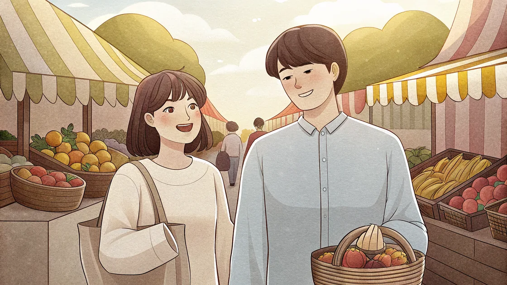

Histoires
Aa Rom.

Chapitre 2 · Niveau Hangeul
시장에서
Au marché
Lire la BD
Un matin au marché de Séoul…
미나 Mina
오빠, 여기 봐요 !
시장
이에요 !
O-ppa, yeo-gi bwa-yo ! Si-jang-i-e-yo !
Oppa, regarde ici ! C'est le marché !
준 Joon
와, 크네요 ! 뭐 살 거예요 ?
Wa, keu-ne-yo ! Mwo sal geo-ye-yo ?
Wow, c'est grand ! Qu'est-ce qu'on achète ?
미나 Mina
수박
이 있어요 ! 저 수박 좋아해요 !
Su-ba-gi i-sseo-yo ! Jeo su-bak jo-a-hae-yo !
Il y a de la pastèque ! J'adore la pastèque !
Des pastèques bien mûres ~
« J'adore ça ! »
준 Joon
얼마
예요 ?
Eol-ma-ye-yo ?
C'est combien ?
미나 Mina
오천
원
이에요.
O-cheon wo-ni-e-yo.
C'est cinq mille wons.
준 Joon
비싸요
!
Bis-sa-yo !
C'est cher !
미나 Mina
아니요 !
맛있어요
!
같이
먹어요 !
A-ni-yo ! Ma-si-sseo-yo ! Ga-chi meo-geo-yo !
Non ! C'est délicieux ! Mangeons ensemble !
준 Joon
좋아요 !
사요
!
Jo-a-yo ! Sa-yo !
Super ! On achète !
끝
Fin du chapitre 2
×